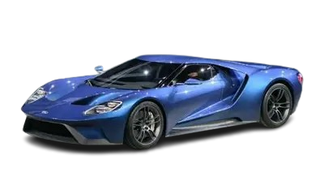

Ford
Historia de la marca
Ford Motor Company fue fundada en 1903 por Henry Ford en Estados Unidos. Es una de las marcas más importantes de la historia del automóvil, ya que revolucionó la industria con la producción en cadena.
Fundador
El fundador de Ford fue Henry Ford, un ingeniero y empresario que cambió la forma de fabricar coches, haciendo que fueran más accesibles para todo el mundo.
Primer coche
El primer coche importante de la marca fue el Ford Model T, lanzado en 1908. Fue el primer vehículo producido en masa y permitió que millones de personas pudieran comprar un automóvil.
Datos importantes
- Fundación: 1903
- País: Estados Unidos
- Industria: Automoción
- Innovación: Producción en cadena
Modelos famosos
- Ford Mustang
- Ford Fiesta
- Ford Focus
- Ford GT
